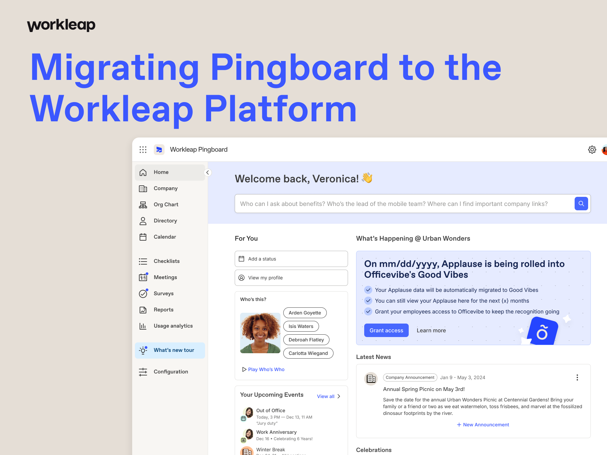
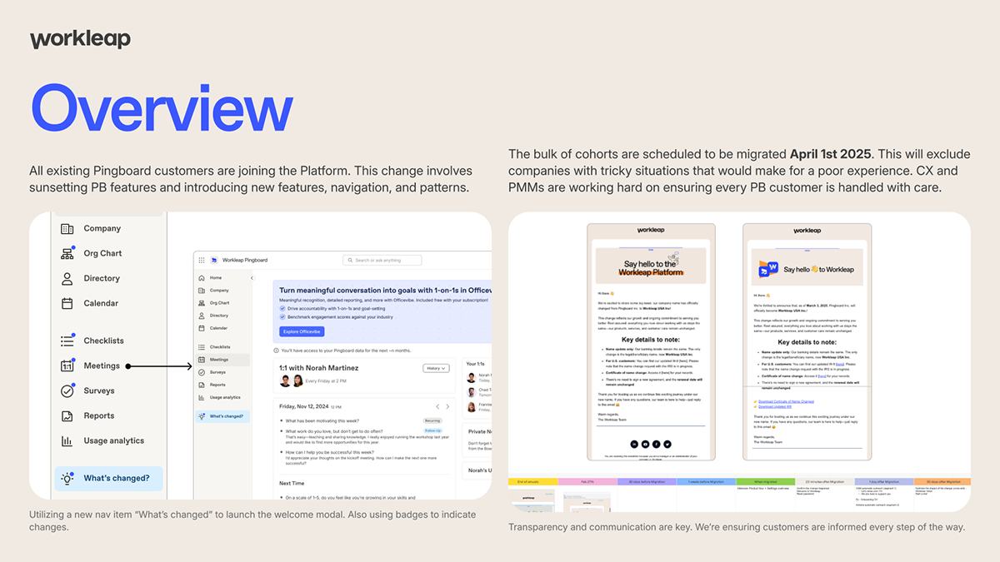
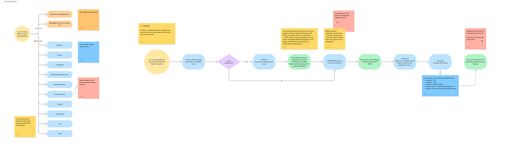
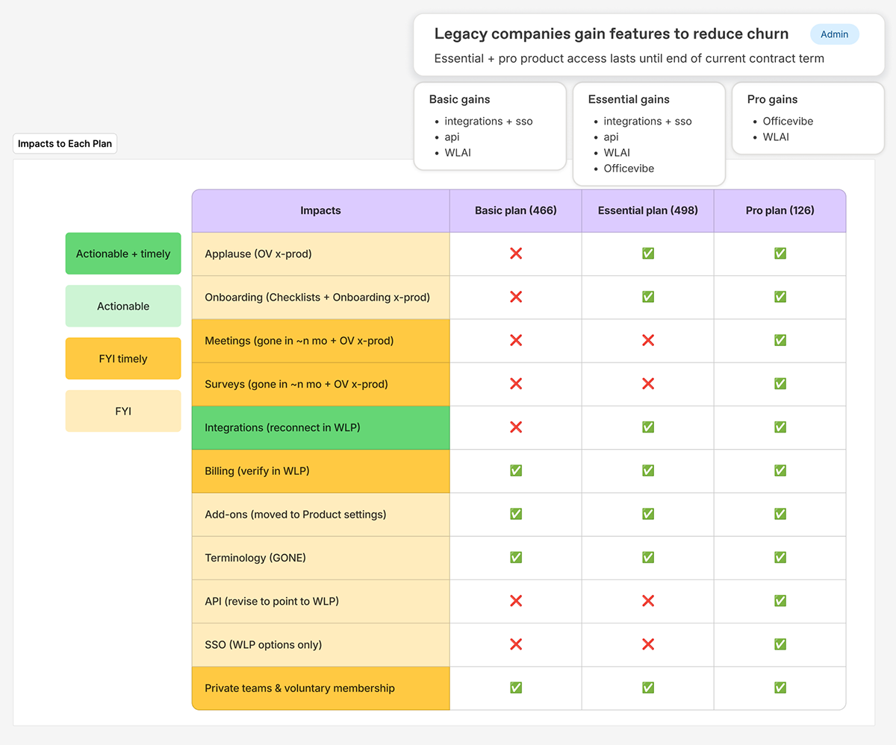
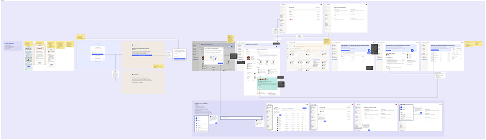
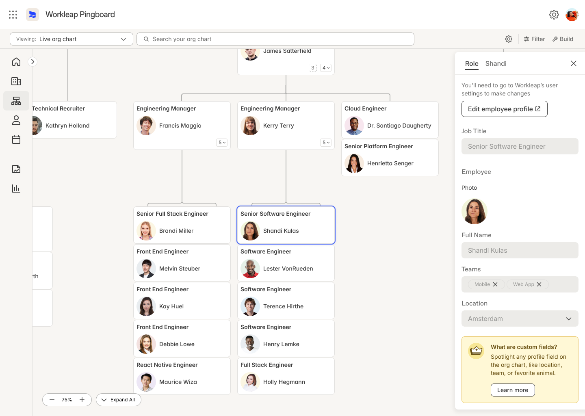
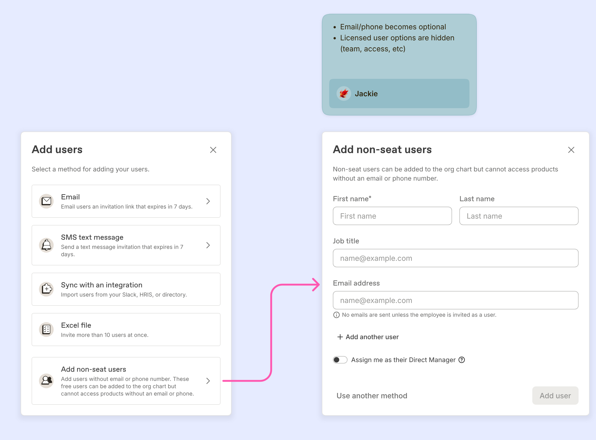
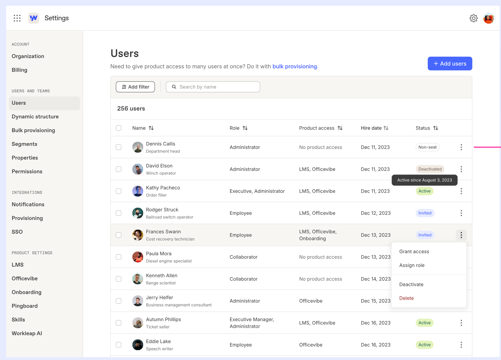
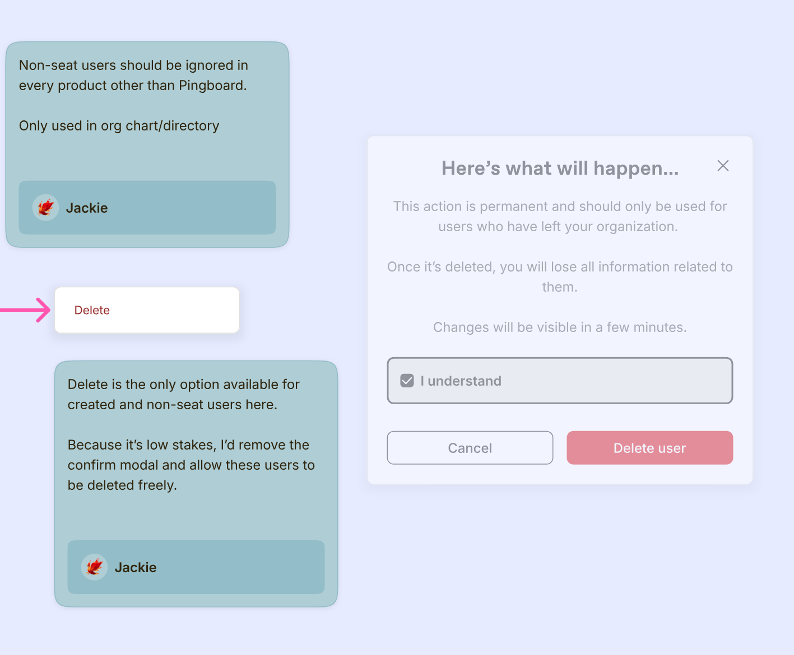

Migrating Pingboard into the Workleap Platform
Designing around a platform migration: onboarding customers in, building the features that unblocked them, and rebuilding what came after.

TL;DR
Pingboard, an org chart and directory product, joined Workleap through an acquisition in December 2023, and its customers were then moved onto the unified Workleap platform. As Pingboard's designer, I shaped that move in three places: the pre-migration UX and onboarding that kept customers informed and oriented, the platform features that unblocked customers who depended on Pingboard capabilities, and the post-migration rebuild of the org chart. Migrations ran from April 2025 to February 2026.
A few numbers from the program, and from the features I designed:
The Challenge
Moving existing customers onto a different platform meant a lot of change at once, for people who had already been through significant change since the acquisition.
Challenges & risks
- Users had to reconnect integrations (HRIS, notifications, SSO).
- Features were relocated across Workleap products (for example, Applause to Good Vibes, and Surveys and 1-on-1s to Officevibe).
- The UX changed significantly: login URLs, user permissions, and deprecated features.
- Some features customers relied on most lived on other teams' roadmaps, so the platform did not yet have parity.
- Confusion and frustration were real risks, given how much change customers had to manage.
What customers needed
- Data integrity and minimal disruption.
- Clear guidance for new workflows, with less friction.
- A clear sense of the value of the migration.

Overview: a new "What's changed" nav item launches the welcome modal, and badges flag what moved. Emails keep customers informed at each step.
My Role & Scope
The migration program itself was run by product, engineering, customer success, and marketing. As Pingboard's designer, my work sat around it in three places:
- Before: the pre-migration UX and onboarding that prepared customers for the move.
- During: the platform features that unblocked migration, including the free org chart, bulk manager assignment, non-seat members, customizable profiles, property settings, and field mapping.
- After: the post-migration rebuild, including engagement in the org chart, the sync report, and the Workleap Next org chart and People fields.
Across all three, I mapped the customer journey, designed the redirect and error-handling experiences, worked with Marketing and Customer Success on communication and onboarding plans, and partnered with the platform and Officevibe teams on cross-product features.
Approach
Formal research was thin on this project: there were no interview syntheses or usability studies. I leaned on behavioral data (LogRocket session replays and Metabase usage data), a survey, input from Customer Success, customer conversations, and a Pingboard HR persona built around the jobs customers hire the product to do.
Before: inform and orient
1. Map the customer journey
I mapped the journey of an existing Pingboard admin being migrated, to see where friction would show up. The map separated what the customer had to do (reconnect integrations, confirm billing) from the "Where's my..." questions about features that had moved.

Customer journey map for a migrating admin, with prioritized steps and open questions.
2. Rank every change by what customers had to do
Not every change deserved the same attention. I mapped each change against each plan tier (Basic, Essential, and Pro) and rated it by whether the customer had to act and how soon: actionable and timely, actionable, FYI and timely, or FYI. Reconnecting integrations was the clearest "actionable and timely" change, so it came first in the flow.

Impacts to each plan, rated by urgency and whether the customer had to act.
3. Inform before login, and keep the product quiet
I wanted admins to learn about their new product access before they logged into their migrated account. With the email doing that work, the product did not have to be so verbose. A long message sprung on users right after login would have been a lot.
- Contextual tours, not one generic tour. A Good Vibes tour launched from the Applause tile, and a survey tour from the Surveys page. I set up three migration tours in Intercom and kept Intercom use to a minimum.
- A migration interstitial that blocks access mid-migration, adapted from another Workleap product.
- Contextual callouts in place of a heavy onboarding flow.
- Legacy features kept through the move, since the Pingboard and Officevibe features were not exactly 1:1 and a straight swap would have been jarring.
- Seamless login and navigation. Redirects from the old URLs to the new pingboard.workleap.com address, with clear messaging around SSO reactivation and password resets.

End-to-end migration flow, from the first email through relocated-feature guidance.
4. Communicate at every milestone
Transparency and communication were key. I worked with Marketing and Customer Success on communication and onboarding plans timed to 90, 30, and 7 days before migration, and on migration day.
During: build what unblocked customers
Cohorts were sequenced by blocker: each group of customers became migratable once one more platform gap shipped. That made the platform features below a direct line to customers who could move.
5. Free org chart: protect the value, and the framing
- "Free," not "Lite." "Lite" insinuates a lesser version of Pingboard, which it was not.
- Upsell callouts for admins only, the people with buying power, with filters held back for the paid tier.
- Bulk direct-manager assignment. A free org chart without managers is a poor experience, so we made a best guess from Officevibe team leads. It became the gate for the second free org chart cohort.
- Scope. I argued to leave the Teams Matrix out of the first version, since doing so made the transition easier and created an upsell opportunity.

Free org chart: one upsell option I explored, a callout in the role side sheet.
6. Non-seat members: keep the job to be done intact
Many customers had people in their org chart who did not need a license. I designed non-seat members to be managed almost identically to licensed users, with a license switch. Adding people stayed available from the org chart and directory, because adding users is part of the job customers are doing: representing their organization. Non-seat members are visible only in Pingboard and settings, notifications go to the next licensed manager up the chain, and they cannot belong to a team. This unblocked about 1,000 organizations and roughly 120,000 people.
Naming. The label mattered as much as the mechanics. I weighed three terms:
- Placeholder user: vague, and can be misconstrued as pending or temporary.
- Unlicensed user: clearer, but insinuates they need to be licensed.
- Non-seat user: clearer, and communicates that they do not use a seat or license.
I went with non-seat users.
Adding. Non-seat users get their own option in the Add users modal. Email and phone become optional, and licensed-user options like team and access are hidden. The option is only visible in Pingboard accounts, and only to people with adequate permissions.

Adding non-seat users: a new option in the Add users modal, with a simplified form.
Managing. In Settings, non-seat members sit in the same Users table as licensed users, with a Non-seat status and no product access. The row menu offers Grant access, Assign role, Deactivate, and Delete.

Settings, Users: non-seat members alongside licensed users, with the row actions open.
Scoping and deleting. Non-seat users should be ignored in every product other than Pingboard, and are only used in the org chart and directory. Delete is the only removal option for created and non-seat users, and because it is low stakes, I proposed dropping the confirmation modal and letting these users be deleted freely.

Design notes on scope and delete handling.
7. Profiles and fields: curate, don't dump
- Customize profiles. A curated subset of properties plus a side panel, rather than automatically showing every public property, which would have been cumbersome.
- Field mapping. I flagged that HRIS field names and the integration layer's field names do not always match, such as one system's "Manager" versus another's "Leader."
- Property settings. Visibility, editability, and required, in one place.
- Forms. Never disable Save. Validate on click and highlight every invalid field.
8. Let evidence kill an idea early
I surveyed managers and Customer Ops in March 2025 on whether to show performance data in the org chart. The results were not encouraging, so we deprioritized it. It was better to learn that early than after investing design and engineering time.
After: rebuild the org chart
9. Make data freshness visible
When engagement scores came to the org chart, I designed a "Last updated" indicator to handle sync lag, so the chart never implied the data was more current than it was. It shipped in March 2026.
10. Redesign the sync report around risk
A customer accidentally deleted teams during a sync, so I redesigned the sync report in July 2026. It now groups changes as Removed, Added, Changed, and Issues, and warns clearly before permanent team deletions.
11. Design for scale
Large org charts needed zoom-adaptive detail and progressive disclosure: at high zoom levels the chart shows only departments, and as you zoom in it reveals more.
12. Prototype the next org chart
For the Workleap Next org chart viewer and People fields, my prototype served as the scope of record for engineering. At the developers' request, People fields were mapped to the legacy visibility options (Everyone, Restricted, Limited, and Hidden).
Results & Impact
- Migrations ran from April 2025 to February 2026. More than 2,000 customers received the 90-day notice, and weekly migrations peaked at roughly 200 in November 2025.
- Non-seat members unblocked about 1,000 organizations and roughly 120,000 people.
- The other platform features I designed, including property types and settings and field mapping, shipped and unblocked cohorts of customers who could not otherwise move.
- The free org chart launched to existing Workleap customers in March 2025, with a 16% email click-through, about 7% activation, and about 20% adoption in the first cohort. The second cohort was gated on bulk manager assignment.
- Post-migration customer webinars drew 75% and 88% attendance.
- Engagement in the org chart (March 2026), the redesigned sync report (July 2026), and the Workleap Next org chart viewer (September 2026) shipped after migration.
Reflection
This was a hard migration, and customers felt the change. The feedback we got shaped what I would do differently, and what I design for now:
- Communication is product work. How a change is explained matters as much as how it is built. A rumor, or a lapsed migration trial, can read as a product bug.
- Usage data justifies cuts, but small groups still feel them. Features used by a few customers still mattered to those customers, and we should have warned them earlier.
- Rushed integration calls leave lasting debt. Decisions made quickly at integration time, like default visibility settings, were still being reconciled long after.
- Teach new customers habits that last. If new customers adopt features that are about to move or disappear, they build habits around them. Scoping what they see up front avoids repeating the same migration.
- Evidence beats opinion early. A short survey saved us from investing in an idea that would not have landed.
Skills Applied
Design craft: Interaction design, journey mapping, error-state and redirect design, onboarding and feature-discovery patterns, org chart and data visualization design, form design, communication design.
Research & evidence: Surveys, behavioral analytics (session replays and usage data), personas and jobs to be done, customer and Customer Success feedback.
Strategy & change management: Migration planning, impact prioritization, scoping, phased cohort rollout, feature parity, product and pricing framing.
Cross-functional: Partnering with Product, Engineering, Customer Success, Marketing, and platform teams across the Workleap suite.